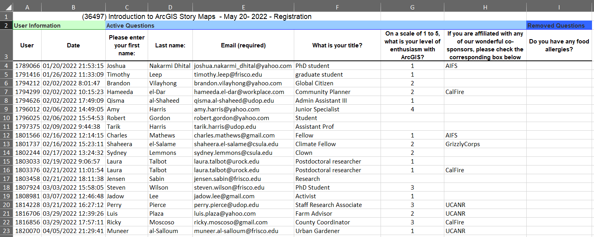
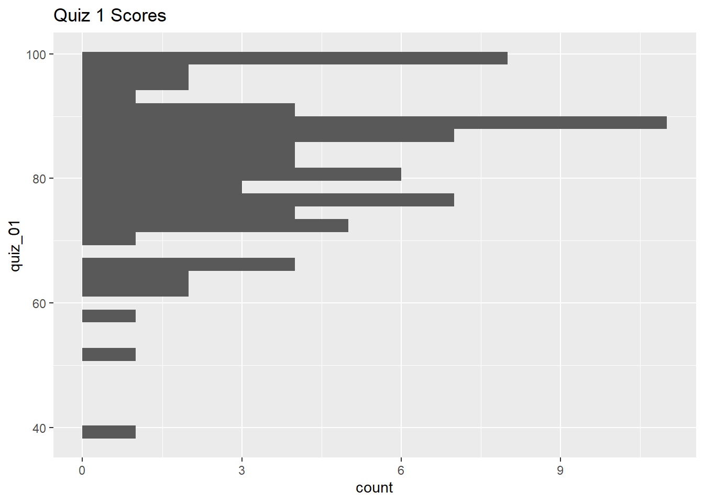
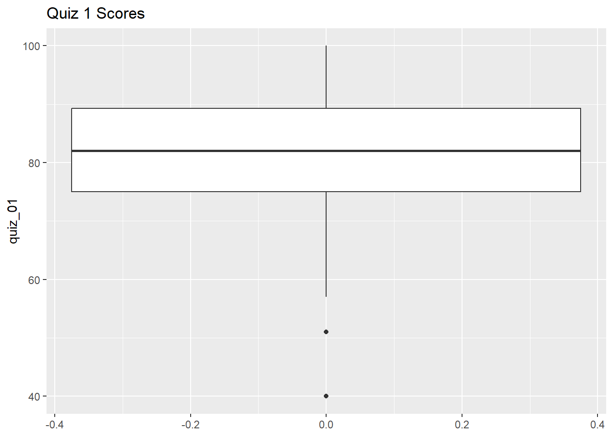
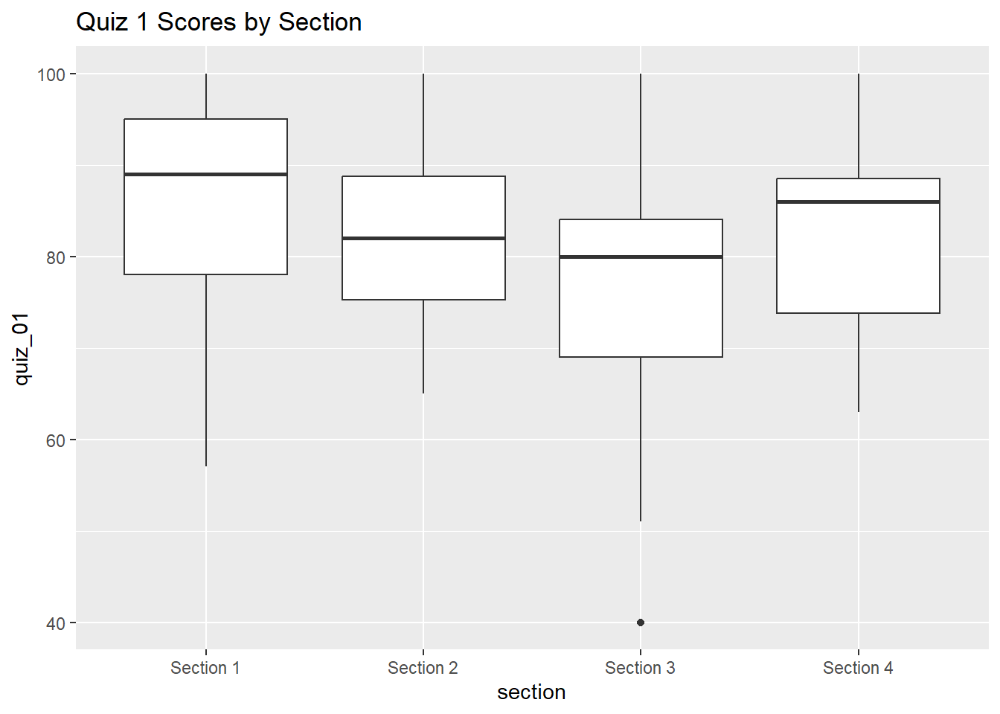

Data Wrangling Exercise 1
Import Data, Clean, Explore, Resample & Split Columns
Importing Messy Excel Data
Although your data may be in a spreadsheet or CSV file, it may not be in an ideal format.
See for example this (fake) registration list:
Here we see:
- a bunch of stuff before the data
- unwieldy column “names”
- several extra columns we don’t need, missing values, etc.
We can tackle many of these issues when we import the data. First, we construct the file name and verify it exists:
reg_list_fn <- here::here("./exercises/data/SurveyResults_36100.xlsx")
file.exists(reg_list_fn)[1] TRUETo import Excel files, we’ll go to read_xlsx() from the readxl package. (This function has a lot of options, so it’s worth reading the help page.)
library(readxl)
reg_list_tbl <- read_xlsx(path = reg_list_fn,
sheet = "Survey Output",
skip = 3,
col_names = c("user", "reg_date", "fname", "lname", "email",
"title", "arcgis", "cosponsor_org", "allergies"),
col_types = c("text", "text", "text", "text", "text",
"text", "numeric", "text", "text"))
reg_list_tblAnd just like that, our data are ready to work with!
Similarly, readr provides super-charged functions for importing and exporting rectangular data in text formats.
Import Pop-Quiz Data
The dataset we’ll use for the rest of the exercise is fake data from weekly pop-quizzes in an undergraduate class. These data were collected as part of a study on improving learning through two interventions, plus a control group.
In addition to the quiz scores for each student, the data includes some additional info about the students, including their discussion section, major(s), year, sex, and height.
The data are saved in a tab-separated-value format:
library(readr)
ss_fn <- here::here("./exercises/data/student_scores.tsv"); file.exists(ss_fn)[1] TRUEss_tbl <- readr::read_tsv(file = ss_fn)Rows: 100 Columns: 25
── Column specification ────────────────────────────────────────────────────────
Delimiter: "\t"
chr (6): Name, Sex, Height, Section, Treatment, Major
dbl (19): Year, Quiz 01, Quiz 02, Quiz 03, Quiz 04, Quiz 05, Quiz 06, Quiz 0...
ℹ Use `spec()` to retrieve the full column specification for this data.
ℹ Specify the column types or set `show_col_types = FALSE` to quiet this message.Explore the Data
Let’s see what we got!
## Number of rows and columns
dim(ss_tbl)[1] 100 25## Column names
names(ss_tbl) [1] "Name" "Sex" "Height" "Section" "Treatment" "Major"
[7] "Year" "Quiz 01" "Quiz 02" "Quiz 03" "Quiz 04" "Quiz 05"
[13] "Quiz 06" "Quiz 07" "Quiz 08" "Quiz 09" "Quiz 10" "Quiz 11"
[19] "Quiz 12" "Quiz 13" "Quiz 14" "Quiz 15" "Quiz 16" "Quiz 17"
[25] "Quiz 18" ## First six rows
head(ss_tbl)# Open it in RStudio
# View(ss_tbl)What are the values in the Section column?
table(ss_tbl$Section)
Section 1 Section 2 Section 3 Section 4
29 27 25 19 CHALLENGE
- What are the values in the Treatment column? (solution)
## Your answer here- What is the distribution of values in the Year column? (solution)
## Your answer hereClean up the column names
Let’s start by making the column names a little easier to work with by:
- making them all lowercase
- replacing spaces with underscores
We can use the dplyr and stringr packages for this:
library(dplyr, warn.conflicts = FALSE)
## Avoid function name classes
library(conflicted)
conflicts_prefer(
dplyr::select,
dplyr::filter,
dplyr::arrange
)[conflicted] Will prefer dplyr::select over any other package.
[conflicted] Will prefer dplyr::filter over any other package.
[conflicted] Will prefer dplyr::arrange over any other package.To apply a transformation (i.e., function) to all column names, we can use dplyr::rename_with().
The arguments to rename_with() should include:
- a function to apply to each column name
- a tidyselect expression which specifies which columns to alter
ss_nn_tbl <- ss_tbl |>
rename_with(tolower, everything()) |> ## make them all lowercase
rename_with(~ str_replace_all(., " ", "_"), everything()) ## replace ' ' with '_'
head(ss_nn_tbl)
Purrr Function Syntax
A function that begins with a tilda is what’s known as ‘purrr function syntax’. For example:
~ str_replace_all(., " ", "_")
Purrr function syntax is commonly used as a shorthand way to pass functions as arguments in the tidyverse functions. The ~ indicates that this is a function being written as a formula, and the . is the placeholder for the data is being passed to the function.
Plot the Distribution of Quiz 1 Scores
First, we pull out just the first quiz scores:
Create a histogram of Quiz 1 scores:
library(ggplot2)
ggplot(ss_q1_tbl, aes(y = quiz_01)) +
geom_histogram() +
labs(title = "Quiz 1 Scores")`stat_bin()` using `bins = 30`. Pick better value with `binwidth`.Warning: Removed 20 rows containing non-finite outside the scale range
(`stat_bin()`).
Create box-and-whiskers plots for Quiz 1:
ggplot(ss_q1_tbl, aes(y = quiz_01)) +
geom_boxplot() +
labs(title = "Quiz 1 Scores")Warning: Removed 20 rows containing non-finite outside the scale range
(`stat_boxplot()`).
Next, let’s break that out by section:
ggplot(ss_q1_tbl, aes(y = quiz_01, x = section)) +
geom_boxplot() +
labs(title = "Quiz 1 Scores by Section")Warning: Removed 20 rows containing non-finite outside the scale range
(`stat_boxplot()`).
CHALLENGE
- Create box-and-whiskers plots of the quiz 1 scores by treatment group. (solution)
## Your answer hereExplore the Top Scores
Lets sort the data by quiz_01:
We can find the ‘top n records’ using slice_max() with the n argument:
## Top 10 records
ss_q1_tbl |> dplyr::slice_max(order_by = quiz_01, n = 10)We can find the ‘top n-percent’ of records using slice_max() with the prop argument:
## Top 15% of records
ss_q1_tbl |> dplyr::slice_max(order_by = quiz_01, prop = 0.15)
Bottom Records
To get the bottom records, use slice_min().
How many students got 100%?
How many students in Section 1 got 100%?
CHALLENGE
- How many students got 90 or higher? (solution)
## Your answer here- How many students got scores between 80-89? (solution)
## Your answer hereCompute Ranks
To add a column for the student rank, we can use dplyr::min_rank():
ss_q1_rank_tbl <- ss_q1_tbl |>
mutate(quiz_01_rank = min_rank(-quiz_01)) |>
arrange(quiz_01_rank)
# ss_q1_rank_tbl |> View()
ss_q1_rank_tbl |> slice(1:20)
Rank Options
To assign ranks from largest to smallest values in a column, add the minus sign (e.g., min_rank(-quiz_01)) or wrap it in desc() (e.g., min_rank(desc(quiz_01))).
There are several ways to handle ties. See help.
Flag Failing Students
Let’s look at the students who failed Quiz 1:
ss_q1_tbl |> filter(quiz_01 < 60)If we want to add a flag for failing quiz 1 in the table, we could add a logical column to the table:
Alternately we can create a character column that says ‘pass’ or ‘fail’ by using if_else() within mutate():
ss_q1_passfail_tbl <- ss_q1_tbl |>
mutate(quiz_01_passfail = if_else(quiz_01 < 60, "fail", "pass"))
ss_q1_passfail_tbl |> slice(1:20)
If Else
dplyr::if_else() is a vectorized form of base::ifelse().
Assign Letter Grades
Assigning grades is an example of resampling the data (in this case using bins).
Assigning letter grades a little trickier than pass vs. fail, because instead of two bins are there are multiple criteria to check.
case_when() is like if_else(), but it can handle an arbitrary number of conditional expressions:
ss_q1_grd_tbl <- ss_q1_tbl |>
mutate(quiz_01_grd = case_when(
quiz_01 < 60 ~ "fail",
quiz_01 < 70 ~ "D",
quiz_01 < 80 ~ "C",
quiz_01 < 90 ~ "B",
quiz_01 < 100 ~ "A",
.default = "A+"
))
# ss_q1_grd_tbl |> View()
ss_q1_grd_tbl |> slice(1:20)Oh dear! Our mutate expression gave students who didn’t show up an A+!! Do you see why?
CHALLENGE
- Fix the expression so that
NAscores also get a letter grade ofNA. (solution)
## Your answer hereHow many of each grade were given:
ss_q1_grd_tbl$quiz_01_grd |> table()
A A+ B C D fail
13 27 29 20 8 3 Split First and Last Name
Split using mutate() + str_split_i()
We can use stringr::str_split_i() with mutate() to separate first and last name into separate columns:
library(stringr)
ss_q1_firstlast_tbl <- ss_q1_grd_tbl |>
mutate(first_name = str_split_i(name, pattern = ",", i = 2),
last_name = str_split_i(name, pattern = ",", i = 1)) |>
mutate(first_name = str_trim(first_name))
ss_q1_firstlast_tbl |> head()
Splitting Strings
When you split strings you may also have to trim leading and trailing white space from the resulting pieces (with str_trim()).
Split using separate_wider_delim()
We can also split columns using tidyr::separate_wider_delim(). This function also removes the column that got split up.
library(tidyr)
ss_q1_firstlast2_tbl <- ss_q1_grd_tbl |>
tidyr::separate_wider_delim(
cols = "name",
delim = ", ",
names = c("last_name", "first_name")
)
head(ss_q1_firstlast2_tbl)Save the grade sheet for Quiz 1 to disk
To save a data frame to disk, we can use readr::write_tsv().
write_tsv() expects a data frame as its first argument, so we can throw it at the end of a pipe chain.
File Formats
There are more formats out there than csv!
tsv has several advantages - it handles embedded commas better, more compatible with international formats that use commas as the decimal place, etc.
CHALLENGE
-
Curve the scores by applying the following transformation: (solution)
curved_score = sqrt(raw_score) * 10
## Your answer here- How does this curve affect the distribution of grades? (solution)
## Your answer here- Create a new column containing the height in meters for all students. (solution)
## Your answer hereDONE!
Remember to render your document so you have a pretty HTML file to keep for future reference.